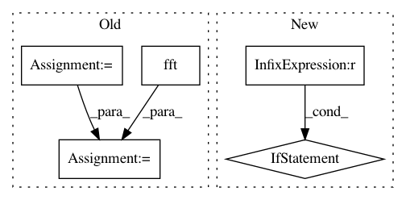

97a543976472f88b7922cc8f8ef3d7c0b6cd3dee,beamfpy/sources.py,PointSource,result,#PointSource#Any#,146
Before Change
python generator: yields source output at microphones in blocks of
shape (num, numchannels), the last block may be shorter than num
signal = fft.fft(self.signal.signal())
pos = array(self.loc, dtype=float).reshape(3, 1)
rm = self.env.r(self.c, pos, self.mpos.mpos)
delays = exp(-2j*pi*(rm/self.c)*\
fft.fftfreq(int(self.numsamples),1.0/self.sample_freq)[:,newaxis])
out = fft.ifft(signal[:, newaxis]*delays, axis=0).real/rm
i = 0
while i < self.numsamples:
yield out[i:i+num]
i += num
After Change
out[i] = signal[array(0.5+ind*self.up, dtype=long)]/rm
ind += 1.
i += 1
if i == num:
yield out
i = 0
except IndexError:
break
yield out[:i]
In pattern: SUPERPATTERN
Frequency: 3
Non-data size: 5
Instances
Project Name: acoular/acoular
Commit Name: 97a543976472f88b7922cc8f8ef3d7c0b6cd3dee
Time: 2012-02-06
Author: sarradj@tu-cottbus.de
File Name: beamfpy/sources.py
Class Name: PointSource
Method Name: result
Project Name: neurodsp-tools/neurodsp
Commit Name: 20047f4faebee3a9f21596bdd24a12df575dcb7a
Time: 2019-08-18
Author: tdonoghue@ucsd.edu
File Name: neurodsp/sim/aperiodic.py
Class Name:
Method Name: sim_powerlaw
Project Name: tiberiu44/TTS-Cube
Commit Name: 9cf2bcdb24f23a17ec11e69b8885851771dfd3d8
Time: 2018-10-25
Author: boros@adobe.com
File Name: cube/models/vocoder.py
Class Name: BeeCoder
Method Name: learn